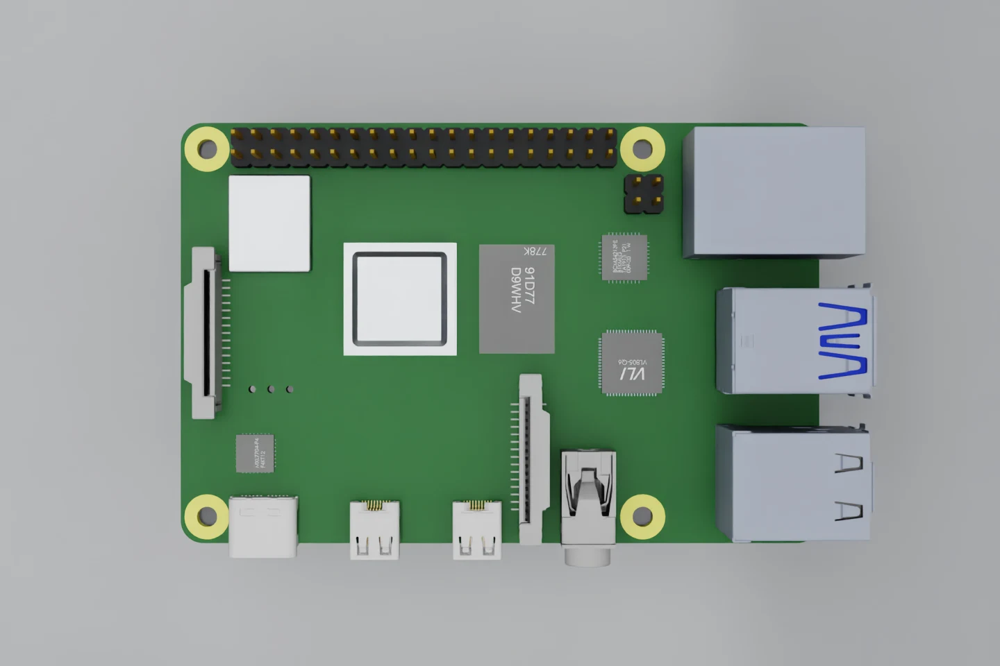
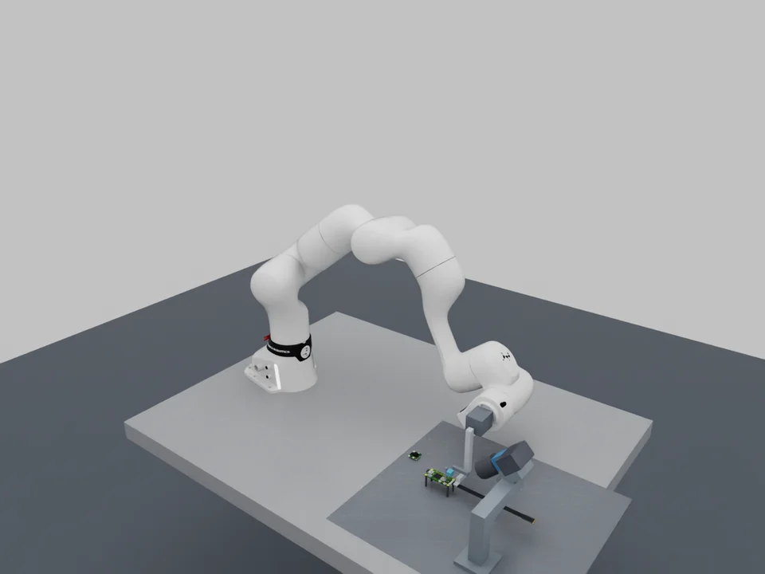
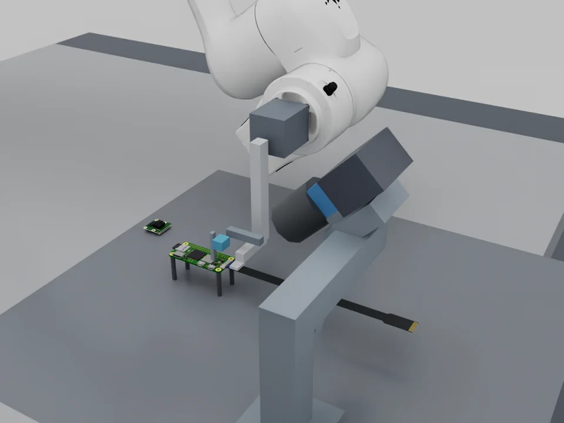
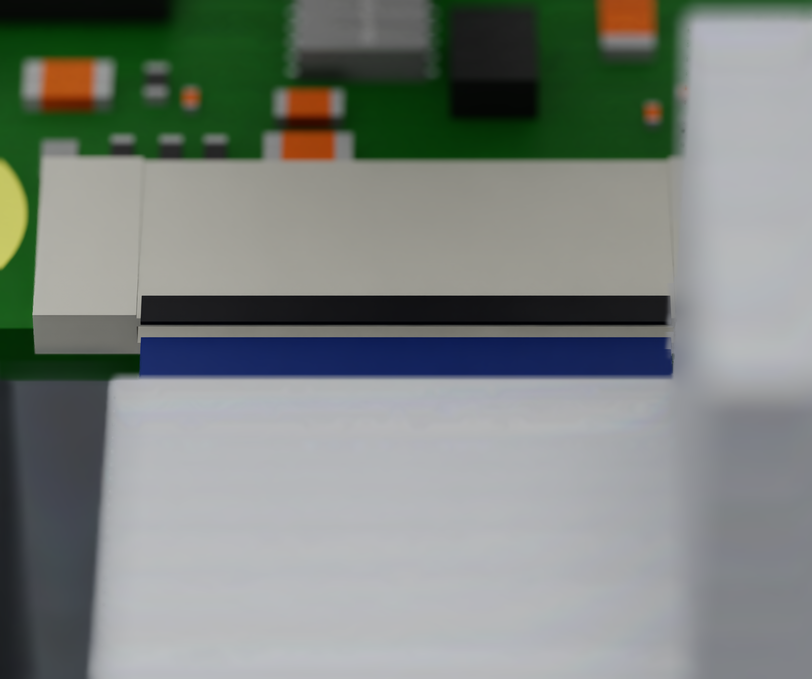
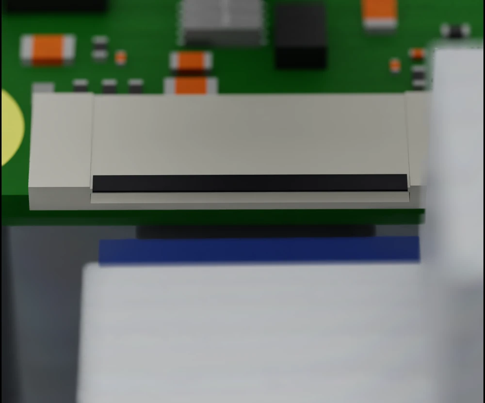
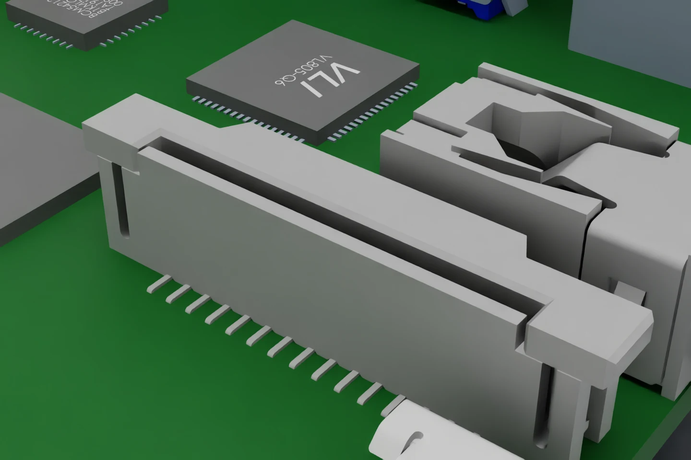
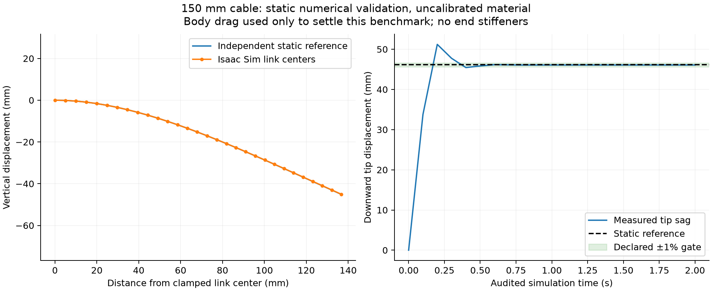
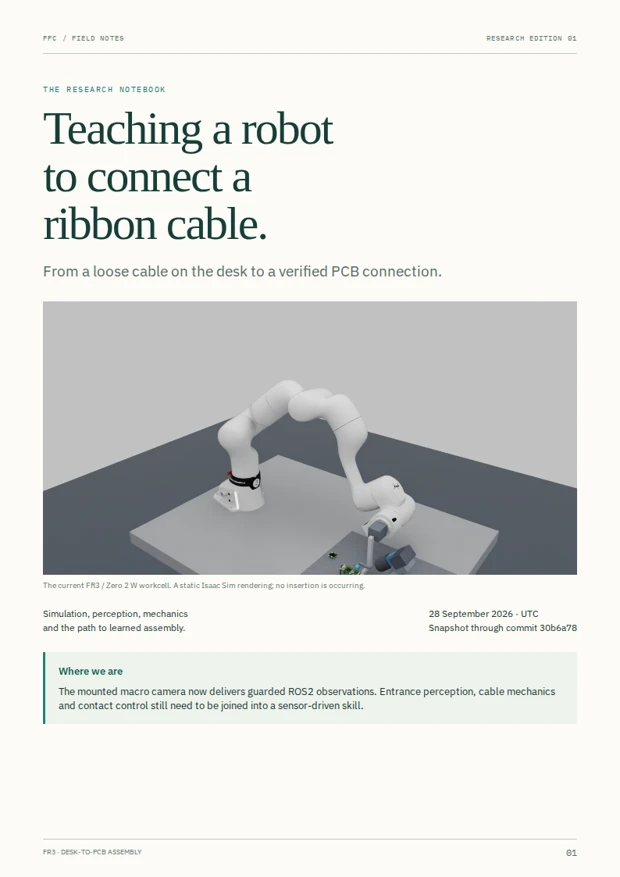

Earlier reference scene
Pi 4 + Camera Module 3
The standard 15-pin camera-cable task established the board assets and first part-segmentation baseline.
Board CAD and cable details →Simulation research in Isaac Sim
Teaching a robot to pick up a ribbon cable, see its end and connect it to a PCB.

Camera perception runs over ROS 2. Robot and tool motion have separate physics tests. Sensor-driven Pi insertion is still being built.
Updated 28 Sep 2026For a five-minute lab presentation, start with the workcell, inspect a few predictions, then play the motion recording.
47 matched camera/prediction pairs over 38.8 seconds of acquisition time. The frozen model receives ROS observations, preserving their timestamps. This recording shows perception, not robot movement.
Press play to load the recording. No audio; the explanation is beside the video.
The whole task is not yet demonstrated. The old direct/fixture insertion videos use exact simulated state and a generic slot. They remain in the historical archive, with their limitations.
As the gripper approaches, it can hide the very features the camera needs. We are testing camera positions and fingertip shapes that leave a clear view along the approach.

A front-facing camera can lose the opening behind the cable or gripper. The mounted macro study checks whether both entrance rims and the leading band stay visible.
These are model settings. The mount is not manufactured; optical response and stiffness are uncalibrated.
Inspect the mounting and clearance study →
The standard 15-pin camera-cable task established the board assets and first part-segmentation baseline.
Board CAD and cable details →
A Standard-to-Mini cable approaches the 22-contact board-side connector laterally. Entrance rims and slider states have separate labels.
Side-entry scene and geometry audit →The community Pi CAD represents the connector as one fused mesh. We built a substitute with separate entrance features inside the same outer dimensions. Its slot dimensions, internal contacts and slider travel are assumptions. The later phone-style press-on flex task remains a separate roadmap item.
Some components are already modeled; others are still candidates. Here is what each one does and what remains to be checked.
We use the FR3 to test reach, tool placement and joint motion within set limits. Its seven-joint model is already integrated in Isaac.
We are keeping one arm as the baseline while we develop perception and control interfaces. That will make the later comparison with the lab robots easier to interpret.
See the motion commissioning →I2RT YAM and UFACTORY Lite 6. Both are comparison candidates; neither is qualified for this task. Work remains simulation-only.
Arm comparison protocola2A2448-75ucBAS + LM35JC10M. A 2448 × 2048 global-shutter camera reference and close-focus lens give the small opening more image detail. The mounted view is used by the current perception model.
The proposed starting settings are manual focus, f/8, 500 µs exposure, 0 dB gain and locked exposure/white balance. The 30 fps target is not achieved: the current static renderer runs near 1.2 fps.
RTX images and a finite-aperture sensitivity study do not reproduce calibrated sensor noise, lens MTF or exposure radiometry.
Camera specifications · Lens specifications · Optics studyA manual-focus 16 mm lens and 3840 × 2160 reference mode at 15 fps were used for earlier overview and entrance studies. It is a useful wide-view comparison, while the macro camera addresses entrance detail.
We have not identified the exact Arducam model available in the lab. B0498 is the reference used in simulation; ownership of that model is unconfirmed. Rolling readout and near-focus capability have not been reproduced or verified.
Arducam setup and limits →We are evaluating this electric pinch gripper as a smaller replacement for the custom two-actuator mechanism. The catalogue lists 150 g mass, 10 mm total stroke and 0.8 to 2 N per jaw. We still need to test whether that force range suits the cable.
The 21-component side-exit CAD now has proposed custom fingers, checked at 23 jaw openings, and a provisional bracket in a separate mounted FR3 scene. Four dimensional cable coupons fit between the pads without penetration. The adapter still needs fastening and stiffness qualification; contact physics and the fixed vacuum nozzle remain to be built. An external driver is required; the ordering suffix still needs confirmation.
Manufacturer catalogue · Current design review · See the compact tool on the FR3 · Sensor-driven pinch benchThe larger hybrid design separates finger deployment from pinch closure. Its 47-part CAD assembly includes supplier actuator geometry and custom parts; a separate Isaac scene tests the mounted tool's motion and cancellation.
The motion test has no cable or board. Drive settings and payload values are still assumptions rather than measurements of a real PQ12 system. The orange block reserves space for a sensor; it provides no tactile feedback.
CAD, motion videos and model limits →Suction can lift a flat cable when a lower finger cannot reach underneath. A passive fixture can support the cable while the robot releases suction, reorients and pinches the presented end.
Schmalz SUF 3 and SMC ZP oval pads are sourced candidates. The pump/ejector, valves, pressure sensor and seal model are not selected and qualified as a complete system. Direct pickup remains a comparison branch.
Pad and gripper datasheets → · Handling rationaleImages need to tell us whether the entrance is visible and how the cable lines up with it. Contact sensing must detect edge hits, buckling, slip and loss of retention. We have not implemented qualified tactile, force or pressure channels in the Pi task.
A gripper closing does not tell us whether it retained the cable. We need sensors with suitable resolution, range and bandwidth, along with workable mounts and realistic noise models.
Sensing architecture →Perception experiments
A whole-connector mask is not an insertion target. The current DINOv3 feature head separates the upper rim, lower rim, cable leading band and open/closed slider.

We trained on 128 scenes and used 32 validation scenes to select the model. We then froze it before capturing 60 new test scenes.
The model got 47 of 48 visible slider states right and returned “unknown” in all 12 views where the slider could not be observed. It mistook a closed slider for an open one in a short-grasp scene. These counts describe a small synthetic test; they do not estimate deployment reliability.
Test protocol, timing and limitations →| Feature | IoU | Visible views |
|---|---|---|
| Upper entrance rim | 91.00% | 45 / 60 |
| Lower entrance rim | 92.77% | 45 / 60 |
| Cable leading band | 92.85% | 42 / 60 |
| Open slider | 94.25% | 21 / 60 |
| Closed slider | 94.76% | 27 / 60 |
A high overlap score does not establish tip pose, depth, clearance or a completed insertion. Full metrics, including false positives.
A small U-Net separated the cable, contacts, stiffener and board sockets. It established a synthetic training and held-out review pipeline.
Pi segmentation baseline →Frozen DINOv3 ViT-B/16 features plus an RGB-detail decoder learn rims and the cable's leading band. The mounted camera has its own trained head.
Feature-model progression →The edge fitter measures separation in pixels and relative angle in the image. It returned measurements in 35 of 60 reviewed scenes and declined all 24 cases with a missing or hidden target.
Fitted edges and error analysis →Where SAM fits: SAM 3 / 3.1 is an annotation and region-proposal candidate. Access was approved, but the displayed live estimator is DINOv3. We do not yet have a qualified SAM insertion pipeline. The image-edge results use scenes we had already reviewed, so they still need a fresh pose-validation set.
Each observation carries its camera calibration and acquisition timestamp. The downstream software checks both before using the image or its prediction.
Implemented perception path · ROS 2 Jazzy
No actuator command leaves this perception path. The image-edge estimator and motion-proposal checks are separate diagnostics.
To connect and qualify
The pipeline checks dimensions, calibration, rig identity and timestamps before and after inference. A deliberately delayed 600 ms prediction emitted no feature frames under the 500 ms deadline.
At about 1.2 fps, the static renderer leaves intervals with no fresh frame under that deadline. We need to resolve the camera rate before using this loop for dynamic insertion.
Read the input/output contracts →Toward a high-fidelity simulation
Alongside the renders, we tested the cable solver against independent mechanics calculations and checked the camera pipeline for stale or mismatched observations.

We imported the board assemblies, modeled the cable contacts and stiffener, and rendered close-up views in RTX.
Built for synthetic perceptionThe camera and lens models use named hardware references. We tested framing, aperture blur and whether the tool blocks the view, alongside the mounting geometry.
Modeled, not optically calibrated
We compared cable behavior with independent beam and hinge-chain calculations, varied the native FEM settings and retained the failed handling runs.
Benchmarked under assumptionsThe independent reference minimizes gravitational and elastic energy. Benchmark-only body damping helps reach equilibrium and is disallowed in handling runs. The agreement qualifies a static numerical comparison; it does not establish dynamic force accuracy, laminate properties or insertion contact.
Read the numerical audit →We tested Isaac's native surface-deformable FEM while varying the mesh, timestep and solver iterations. Full manipulation with that model remains unqualified.
For a more detailed reference, we propose a nonlinear layered-shell model of the cable body and stiffener, with extra detail at contact points. It needs to capture bending, twist and load transfer through the reinforced end before we fit a faster training model to it.
That Pi-specific laminate FEA model is still to be built and validated. The papers help us choose a method, but we do not have verified material constants for this cable.
The coarse segmented solver sagged about 25 times its discrete static prediction. Refinement exposed numerical compliance rather than a material change.
Handoff debugging found lost clamp preload and unintended guide contact. Recording targets, measured joints and contact events let us separate those failures.
The failed runs remain available alongside the corrected results.
Failure record and corrections →The paper calibrates reduced plate models using modal tests. That method can inform our mechanics work, but its material values and results do not validate our cable or insertion task.
Read the paper ↗The policy uses two segmentation views and end-effector orientation. We can compare a similar observation space for insertion; pickup, tactile handoff and latch operation remain separate problems in our project.
Read the paper ↗The work combines tactile force information with a history of the estimated insertion state. It gives us a reason to test policies that remember recent contact and adjust their next move.
Read the paper ↗What “hyperrealistic” means for this project: an operating range in which image features, cable shapes, force histories, sensor timing and failure modes match independent evidence. We have not yet reached that standard or physically calibrated the simulation.
The seven skills
We are still qualifying Step 1, while separate mechanical and motion experiments prepare later skills. There is no end-to-end success rate yet.
So far: feature geometry, optics/mount studies, held-out DINOv3 masks, ROS observation checks and retrospective image-edge fitting.
Next: estimate cable-to-entrance position in physical units and measure its uncertainty. The features must remain visible as the final tool approaches, with accuracy checked on fresh tests.
Review the evidence →So far: hybrid CAD, isolated tool dynamics and commercial-gripper sourcing.
Next: compliant cable and pad contact, vacuum/force observations, retained grasp and exposed tip. Compare direct pickup with fixture presentation across cable poses.
Tool evidence →So far: leading-band labels and grasp-setback visibility studies.
Next: estimate a held-end frame and deformation, detect slip and ambiguity, then obtain another view or regrasp. A stable physical grasp model comes first.
See the occlusion comparison →So far: image-space line fits, non-executable motion proposals, FR3 joint tracking and cancellation.
Next: measure how robot motion changes the image, calibrate the coordinate transforms and check the approach path for clearance. After each short move, let the robot settle and acquire a fresh image; score alignment independently.
Alignment diagnostic →So far: historical contact studies in a different, privileged-state task.
Next: qualify Pi contact physics and sensor-driven, bounded insertion. Deliberately test edge hits, skew, buckle, slip and blocked entry with a stop-and-retract response.
Control and contact plan →So far: static open/closed slider labels and a provisional image classifier.
Next: dynamic latch mechanics and separate seating/latch skills, with partial insertion and mislatched negative cases. Add an electrical or functional check in future hardware work.
Verification criteria →So far: stale-input, calibration, model-identity and cancellation checks.
Next: task-level detection and bounded recovery for missed grasps, shifted boards, lost tracking and failed insertions. Report per-skill and whole-task outcomes over held-out trials.
Complete acceptance criteria →Once the observation/action interfaces and resettable physics are credible, collect bounded-controller demonstrations. Compare imitation or vision-action learning with reinforcement learning using the same sensor inputs, actuator limits and independent scoring. Evaluate failure detection and recovery alongside success.
Learning architecture and curriculum →Start with a held cable near an open connector. Once that local insertion skill works reliably, add desk pickup and latch operation.
Keep recent RGB images or features alongside joint position and velocity, selected tactile/load/pressure channels, timestamps, validity and task phase. Explicitly mark missing or stale measurements.
The policy proposes a short correction. The controller limits the move, waits for measured completion and gets fresh observations. We still need to establish suitable movement and force limits.
Finish the Pi contact geometry, compliant cable/grasp and sensor models. Add repeatable resets and failures: skew, blocked entry, tip occlusion, slip and stale frames.
Before moving on: numerical convergence, declared parameter ranges and sensor-only detection of representative failures.
Begin with the cable securely held. Use measured image response to align without contact, then test short insertion moves with stop and retract behavior. Fix the input definitions before collecting demonstrations.
Before moving on: independently scored alignment, seating and failure response across held-out initial conditions. No task-object coordinates enter the controller.
Record observations, actions, intervention reasons and outcomes. Begin with behavior cloning of local alignment/insertion; compare short action chunks or a recurrent policy. A broader vision-action model becomes useful when multi-stage data supports it.
Before moving on: performance on separate episodes, materials/appearances and offsets; failures and recovery included. Split by episode and condition, not adjacent video frames.
A residual policy would learn small corrections to the baseline controller. Reward progress visible in the observations and evidence of retention or contact, with costs for time and actions. Fix those rewards before evaluation and test whether a policy can exploit them without completing the task.
Before moving on: compare baseline, imitation and RL under identical resets, sensors, action limits and evaluation. Privileged cable pose is excluded from actor, critic, reward and skill transitions; truth remains offline scoring data.
Add held-end inspection, uncertain pickup and fixture regrasp, then latch and final verification. Randomize supported optics, geometry, friction, compliance, latency and dropout. Only after the simulation proof of concept, calibrate to the selected lab arm, cable and sensors.
Before moving on: per-skill and whole-task success, force/damage proxies, cycle time, recovery and uncertainty over held-out conditions. Hardware validation is a later, separate result.
Task outcomeVerified seating and latch state; false success and retained-grasp failures.
Contact behaviorForce histories, slip, buckle proxies and stop/retract response.
GeneralizationUnseen offsets, cable curvature, lighting, occlusion and robot response.
EfficiencyDemonstration count, training budget, cycle time and recovery attempts.
This is the proposed training program. The trained model we can demonstrate today predicts visual features; no learned insertion policy has been trained or validated yet. See the full learning architecture and curriculum.
The detailed pages contain the CAD reviews, source data and experiment records behind this overview.

Hardware, optics, architecture, mechanics and evaluation in one illustrated PDF. Edition 01 predates the latest motion and compact-gripper work; this overview carries the updates.
Open the PDF ↗Looking for the earlier full-sequence recordings? The complete archive is preserved here.